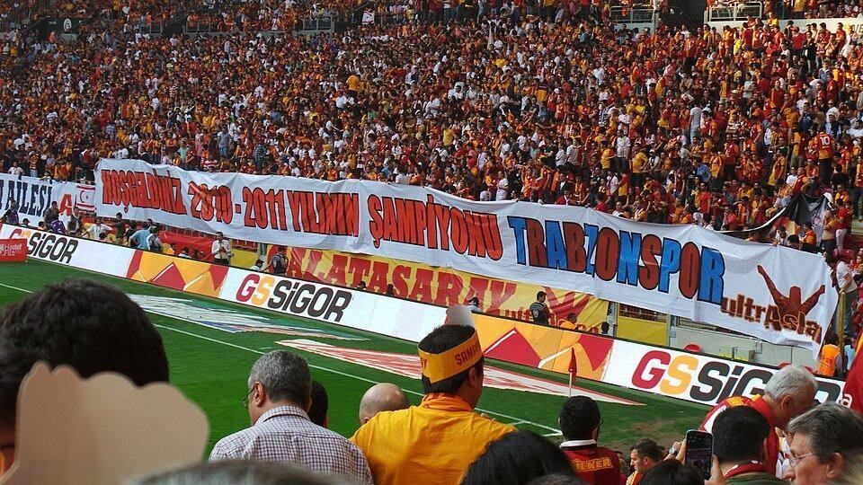

Trabzonspor-Galatasaray maçı ne zaman, saat kaçta, hangi kanalda?

Görsel: Galatasaray Trabzonspor pankart · Ultraslansi · CC BY-SA 3.0 · Wikimedia Commons
Süper Lig'in 6. haftasında Trabzonspor ile Galatasaray, 19 Eylül 2026 Cumartesi akşamı Trabzon'daki Papara Park'ta karşı karşıya geliyor. Maçın saati, yayın kanalı ve şifre durumu, hafta sonunun ilk gününde arama kutularına en sık yazılan başlıklar arasına girdi.
Trabzonspor-Galatasaray maçı ne zaman, saat kaçta, hangi kanalda?
Milliyet ve CNN Türk'ün aktardığına göre karşılaşma 19 Eylül 2026 Cumartesi günü saat 20.00'de başlıyor. Maç, Trabzon'daki Papara Park'ta oynanıyor ve Süper Lig'in 6. haftasına ait. İki kaynak da tarih, saat ve stat konusunda aynı bilgiyi veriyor.
Yayın beIN Sports 1 ekranlarından yapılıyor. CNN Türk, karşılaşmanın şifreli olarak yayımlanacağını yazdı. Kaynaklarda maçı şifresiz aktaracak bir alternatif kanaldan söz edilmiyor, dolayısıyla yayını izlemek için abonelik gerekiyor.
Karşılaşmayı Batuhan Kolak yönetiyor. Yardımcılıklarını İbrahim Çağlar Uyarcan ile Candaş Elbil üstleniyor. Dördüncü hakem olarak Gürcan Hasova görevlendirildi. Hakem atamalarını Milliyet ve CNN Türk aynı biçimde aktardı.
Trabzonspor-Galatasaray derbisi neden bu kadar arandı?
Aramaların yoğunlaşmasındaki ilk neden takvim. Karşılaşma cumartesi akşamına denk geldiği için saat ve kanal bilgisi, maç günü boyunca tekrar tekrar sorgulandı. Aynı gün oynanan başka Süper Lig maçları da yayın saatlerinin karşılaştırılmasına yol açtı.
İkinci neden puan tablosundaki tablo. Sporx'in verdiği bilgilere göre Galatasaray beş maç sonunda 13 puanla ligin ilk sırasında bulunuyor ve ligde yenilgi almadı. Trabzonspor ise 2 galibiyet, 1 beraberlik ve 2 yenilgiyle topladığı 7 puanla averajla dokuzuncu sırada.
Üçüncü neden kadrolardaki belirsizlik. Sporx'e göre Galatasaray'da Victor Osimhen kasık sakatlığı nedeniyle bu maçta forma giymiyor. Mario Lemina'nın da kasık sakatlığı bulunuyor; Wilfried Singo ve Kaan Ayhan kadroya alınmadı. Bu isimlerin durumu, maç öncesi aramaların bir bölümünü oluşturdu.
Trabzonspor-Galatasaray maçında bilinenler ve henüz bilinmeyenler
Kesinleşmiş başlıklar sınırlı ve net: tarih, saat, stat, hafta numarası, yayın kanalı ve hakem kadrosu. Bu altı başlıkta kullandığımız kaynaklar arasında fark yok. Şifre durumu da yalnızca CNN Türk tarafından açıkça belirtilmiş durumda.
Trabzonspor tarafındaki eksikleri Sporx şöyle sıraladı: Okay Yokuşlu ve Malinovskyi sakat, Folcarelli ile Batagov ise maça hazır değil. Ev sahibi ekipte cezalı bir oyuncu bulunduğu bilgisi kaynaklarda yer almıyor.
İlk 11'ler ise kesinleşmiş değil. Milliyet ve Sporx birbirinden farklı muhtemel kadrolar yayımladı; örneğin orta saha ve kanat tercihlerinde iki liste örtüşmüyor. Gerçek kadrolar, maçtan kısa süre önce kulüpler tarafından resmen bildiriliyor.
Trabzonspor-Galatasaray maçından sonra sırada ne var?
Sonuç, ligin üst sıralarındaki sıralamayı doğrudan etkileyecek. Galatasaray bir galibiyetle liderliğini sürdürmeyi, Trabzonspor ise puan farkını kapatıp ilk sıralara yaklaşmayı hedefliyor. Beraberlik hâlinde tablonun nasıl şekilleneceği, aynı hafta oynanan diğer maçlara bağlı.
Karşılaşmanın ardından Süper Lig'in 7. hafta programı ve varsa disiplin kararları Türkiye Futbol Federasyonu tarafından duyurulacak. Bu duyuruların tarihleri henüz açıklanmadı. İki takımın sonraki maçlarının rakipleri ve saatleri de fikstür güncellendiğinde netleşecek.
“Karşılaşma şifreli olarak ekranlara gelecek.”
— CNN Türk, 19 Eylül 2026
Takip etmek için
- beIN Sports 1'in 19 Eylül Cumartesi 20.00 yayını; açıklanan ilk 11'ler genellikle maçtan kısa süre önce ekrana geliyor.
- Türkiye Futbol Federasyonu'nun resmî sitesindeki Süper Lig fikstürü ve haftalık hakem atamaları duyuruları.
- Trabzonspor ve Galatasaray'ın resmî kulüp siteleri ile sosyal medya hesaplarındaki kadro ve sakatlık açıklamaları.
Sık sorulan sorular
Trabzonspor-Galatasaray maçı saat kaçta başlıyor?
Karşılaşma 19 Eylül 2026 Cumartesi günü saat 20.00'de Trabzon'daki Papara Park'ta başlıyor. Maç, Süper Lig'in 6. haftasına ait.
Trabzonspor-Galatasaray maçı hangi kanalda yayımlanıyor?
Yayın beIN Sports 1 ekranlarından yapılıyor. CNN Türk'ün aktardığına göre maç şifreli yayımlanıyor; kaynaklarda şifresiz bir alternatif kanal bildirilmedi.
Galatasaray'da Victor Osimhen bu maçta oynuyor mu?
Sporx'in aktardığına göre Osimhen kasık sakatlığı nedeniyle forma giymiyor. Aynı kaynakta Mario Lemina, Wilfried Singo ve Kaan Ayhan da eksikler arasında sayıldı.
Maçı hangi hakem yönetiyor?
Karşılaşmanın hakemi Batuhan Kolak. Yardımcıları İbrahim Çağlar Uyarcan ve Candaş Elbil, dördüncü hakem ise Gürcan Hasova olarak açıklandı.
Olgular şu yayıncıların haberlerinden derlendi: Milliyet, CNN Türk, Sporx. Metnin tamamı TrendSaphiens tarafından yazıldı; kaynaklarla kelime örtüşmesi %0.0 (eşik %5). Kaynaklarda olmayan bilgi eklenmedi.